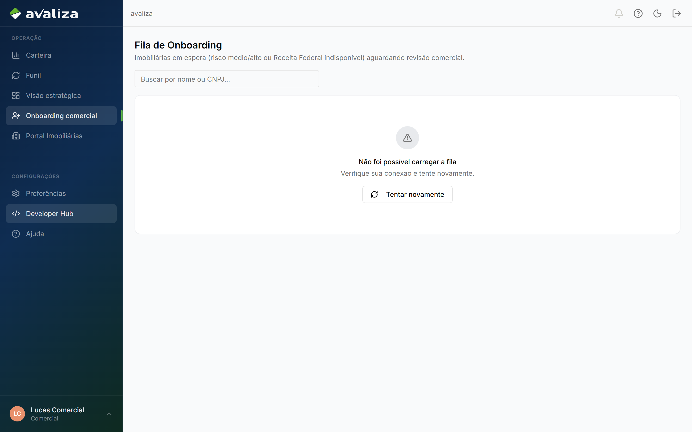
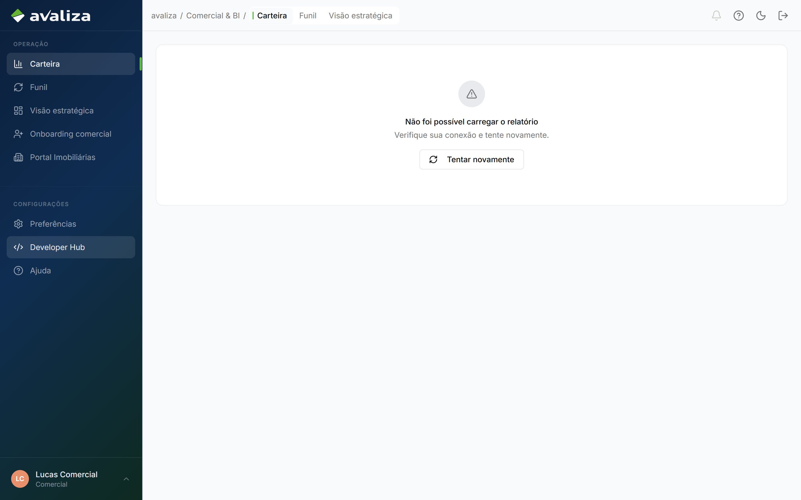
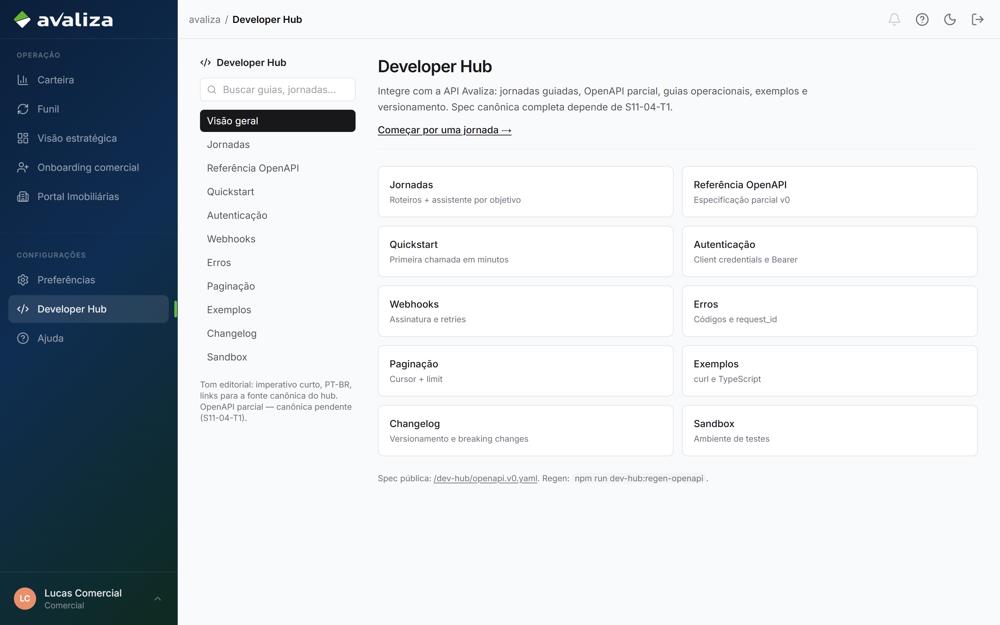

Documento para o responsável · Analista comercial
Para: Responsável Comercial
Comercial
Aprovar ou recusar o cadastro da imobiliária. Carteira, funil e Developer Hub são leitura — não são a jornada.
O que vocês fazem
O trabalho no produto, na ordem em que costuma aparecer no dia. Tela é evidência; não é etapa de um tour.
-
Aprovar ou recusar o cadastro
Fila /onboarding-comercial. O clique de aprovar é irreversível. Depois disso, originar é da loja.
Onboarding da imobiliária ·
/onboarding-comercial
/onboarding-comercial -
Ler a carteira e o funil
Visão. Não substitui o clique de onboarding.
/relatorios
/relatorios
Ciclos que vocês fecham
Jornadas cujo resultado é deste setor. Fronteira, não o passo a passo acima.
vocês entregam Onboarding da imobiliária Cadastro aprovado, rejeitado ou parado — o clique de aprovar é irreversível.Ciclos em que só aparecem
Participam da operação. Quem fecha o ciclo é outro setor.
Não participam de ciclo alheio. Ou são donos, ou estão fora.
Isto não é de vocês
Confusão típica deste time. O dono está no link.
- Nova proposta — dono: Imobiliária. Depois do cadastro aprovado, originar é da loja.
- Ticket de atendimento — dono: Atendimento. CS e Atendimento pegam chamado. Comercial não é mesa de ticket.
Recebem de
- Nenhum setor é obrigado a disparar os ciclos de vocês.
Passam para
- De Onboarding da imobiliária passam para Imobiliária (Nova proposta): Cadastro aprovado — a loja já pode originar
Capacidades do shell (não são jornadas)
Menu e leitura. Não fecham ciclo — mas são as telas que o time abre no dia a dia além do trabalho acima.
-
Carteira / funil / visão estratégica
Leitura. Aprovar cadastro é a jornada de onboarding.
/relatorios/relatorios -
Portal Imobiliárias
Módulo em desenvolvimento — não há jornada de ficha/saúde/treino.
/imobiliarias
/imobiliarias -
Developer Hub
Docs de API.
/developers
/developers